รถตู้ภูเก็ต: คู่มือครบพร้อมคนขับ
บริการรถตู้ภูเก็ตคืออะไร ข้อดี การนำเที่ยว รับส่งสนามบิน เส้นทางยอดนิยม และวิธีเลือกผู้ให้บริการ
รวมไอเดียเที่ยว 4 โซนยอดนิยม: ภูเก็ต พังงา กระบี่ และเขาสก เหมาะสำหรับวางแผนทริปครอบครัว คู่รัก และทริปกลุ่ม
บริการรถตู้ภูเก็ตคืออะไร ข้อดี การนำเที่ยว รับส่งสนามบิน เส้นทางยอดนิยม และวิธีเลือกผู้ให้บริการ
ต่างจากทัวร์รวมอย่างไร ไอเดียครึ่งวัน–เต็มวัน เช็คลิสต์ก่อนจอง และวิธีเลือกผู้ให้บริการ
จุดนัดพบ สัมภาระ ไฟลท์ล่าช้า โซนโรงแรม เช็คลิสต์ และมุมมองรถตู้ VIP
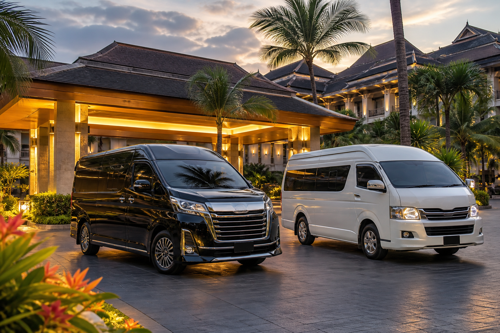
ครึ่งวัน–เต็มวัน หลายจุด โอกาสธุรกิจ เปรียบเทียบมาตรฐานกับ VIP และวิธีบรีฟผู้ให้บริการ
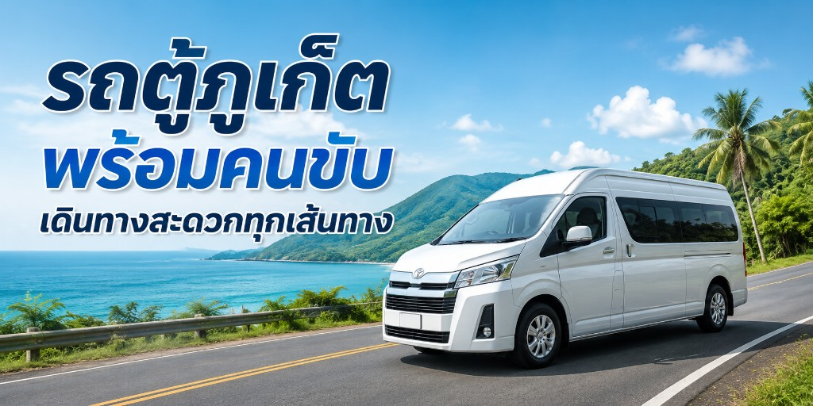
คู่มือบริการรถตู้ภูเก็ต รับส่งสนามบิน นำเที่ยว เส้นทางยอดนิยม และวิธีเลือกผู้ให้บริการ
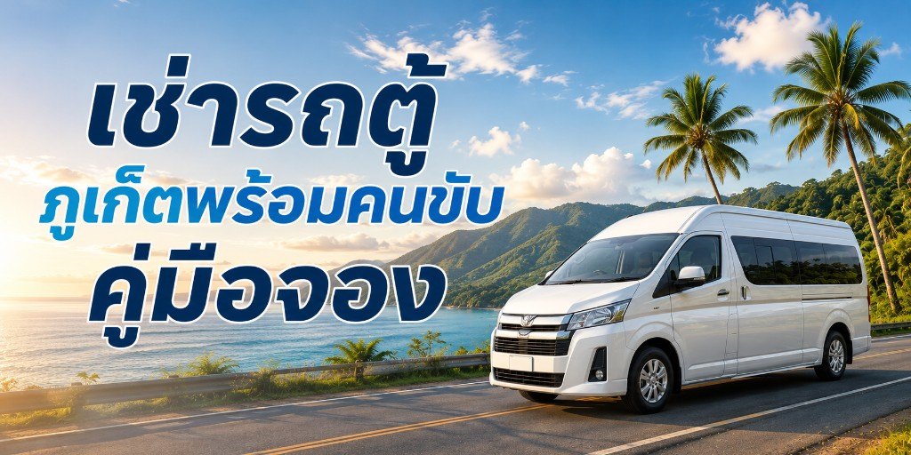
เตรียมข้อมูลก่อนจอง เปรียบเทียบกับขับเอง รูปแบบเหมา และเช็คลิสต์สำคัญ
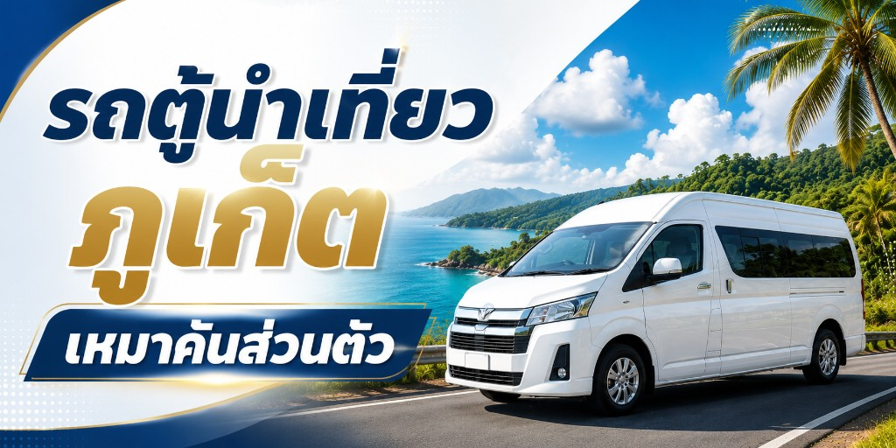
ต่างจากทัวร์รวมอย่างไร ไอเดียเส้นทาง 1 วัน ทริปพังงา–กระบี่ และ checklist ก่อนออกทริป
Phuket Airport Transfer โซนโรงแรม รถตู้ VIP และเคล็ดลับไฟลท์ดีเลย์

คู่มือบริการรถตู้ภูเก็ต รับส่งสนามบิน ทัวร์รอบเกาะ ไปพังงา–กระบี่ ราคาและวิธีจอง
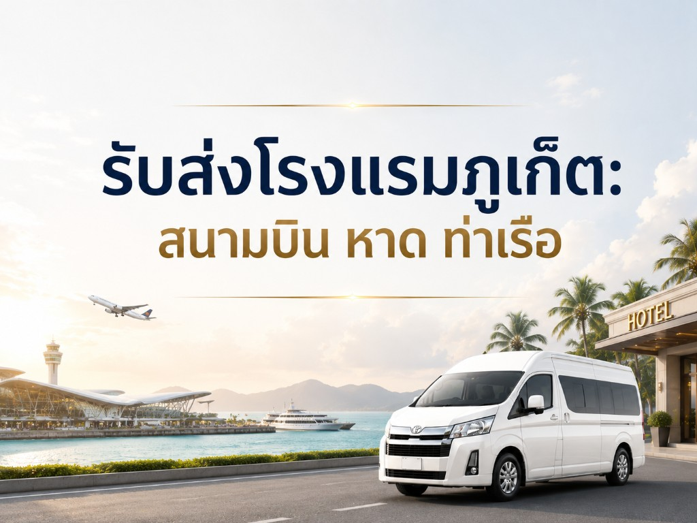
เที่ยวแบบส่วนตัว วางแผนเส้นทางเอง ตัวอย่างทริป 1 วัน ข้อดีและความปลอดภัย
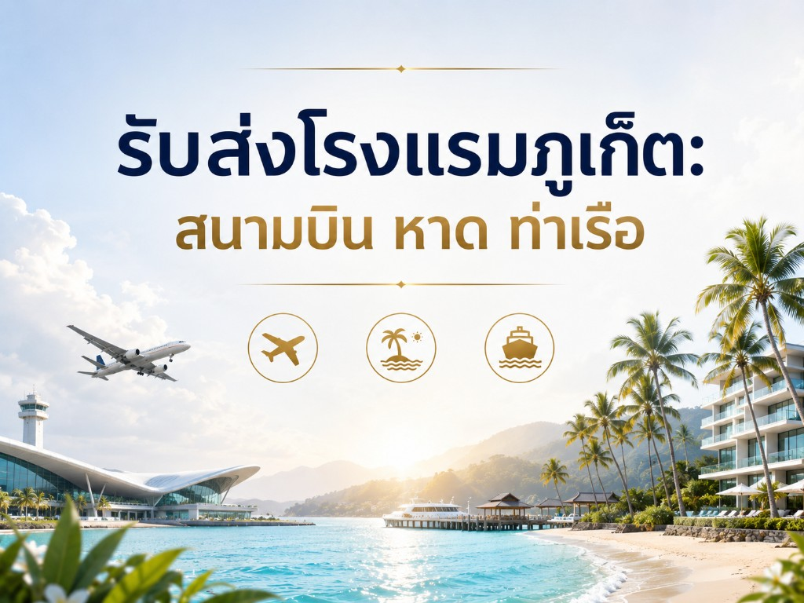
รับส่งสนามบิน ย้ายโรงแรม ต่อทัวร์สถานที่ยอดนิยม พังงา กระบี่ ในทริปเดียว

เหมาคันเหมาะกับใคร ครึ่งวันหรือเต็มวัน ข้อดี ข้อควรทราบ และวิธีจอง

จากสนามบินไปป่าตอง ย้ายโรงแรม ไปท่าเรือ ราคา เส้นทาง และเคล็ดลับรถติด
Alphard รับส่งสนามบิน งานธุรกิจ งานแต่ง เปรียบเทียบรุ่น ราคาและวิธีจอง

รถตู้บริษัทพร้อมคนขับ ใบเสนอราคา หลายคัน งานองค์กรและ Incentive

ทริปข้ามจังหวัด ต่อเครื่อง ต่อเรือสมุย/พะงัน ราคาและเส้นทาง

ทริปข้ามจังหวัด ไปไร่เลย์ หาดอ่าวนาง ไปเช้า-กลับเย็น ราคาและเส้นทาง

จากโรงแรมหรือสนามบินไปท่าเรือฟีรี่ ตรงเวลาขึ้นเรือ ราคาและวิธีจอง

ทริปธรรมชาติข้ามจังหวัด ไปอุทยานเขาสก ไปเช้า-กลับเย็น หรือพักค้างคืน

Alphard Sprinter รับแขกงานแต่ง งานสัมมนา หลายคัน ราคาและวิธีจอง
เหมาครึ่งวัน/เต็มวัน พร้อมคนขับ วางเส้นทางเอง เหมาะครอบครัวและหมู่คณา
รับจากสนามบิน ท่าเรือ หรือย้ายโรงแรม — รถตู้พร้อมคนขับทุกโซน
Toyota All New สำหรับครอบครัว 6–8 คน รับส่งสนามบิน เหมาเที่ยว ราคาและ FAQ
ทริปข้ามจังหวัด ไปอ่าวพังงา Khao Lak ไปเช้า-กลับเย็น ราคาและเส้นทาง

จุดรับ Terminal 1–2 เปรียบเทียบแท็กซี่ Grab เลือกรถตู้ภูเก็ต ราคาโดยโซน เคล็ดลับไฟลท์ดีเลย์ และ FAQ

เหมาเที่ยวรอบเกาะพร้อมคนขับ เส้นทางยอดนิยม ราคา และวิธีจอง — รองรับครอบครัวและหมู่คณา
รับส่งสนามบิน โรงแรม เหมารายวัน — ครบทุกขั้นตอนสำหรับคำค้น รถตู้ ภูเก็ต และรถรับส่งภูเก็ต

คู่มือฉบับสมบูรณ์สำหรับคำค้น รถตู้ภูเก็ต และ รถตู้ ภูเก็ต — เลือกรถ เปรียบเทียบ Toyota Sprinter ราคา และวิธีจอง
ครบทุกขั้นตอน — ประเภทรถ บริการ ราคา วิธีจอง และ FAQ สำหรับผู้ที่ต้องการรถตู้พร้อมคนขับในภูเก็ต

เปรียบเทียบรุ่น VIP บริการรับส่งสนามบิน งานธุรกิจ ราคา และวิธีจอง — รวมคำค้น VIP van Phuket

คู่มือจองรถตู้พร้อมคนขับระดับ VIP สำหรับงานรับแขก ธุรกิจ และทริปส่วนตัว — VIP van with driver Phuket
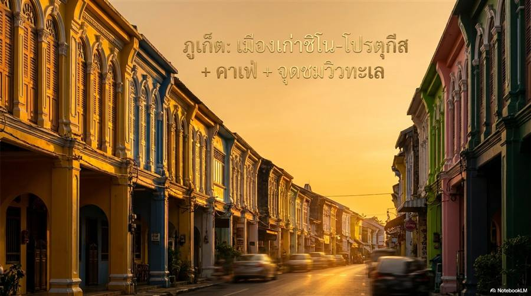
เที่ยวตัวเมืองแบบเดินชิล ถ่ายรูปตึกเก่า คาเฟ่ และปิดท้ายด้วยจุดชมวิวพระอาทิตย์ตกฝั่งอันดามัน
ขึ้นไปชมวิวทะเลจากมุมสูง และส่องพระพุทธรูปขนาดใหญ่ที่กลายเป็นสัญลักษณ์ของภูเก็ต
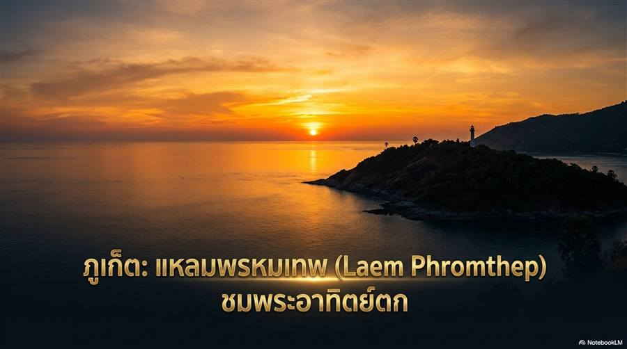
จุดถ่ายรูปยอดนิยมของภูเก็ต เหมาะกับช่วงเย็นเพื่อชมพระอาทิตย์ตกแบบสวยมาก
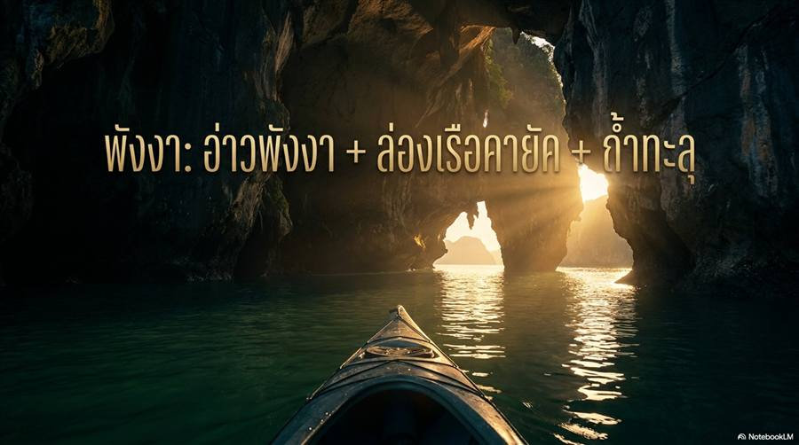
ชมภูเขาหินปูนกลางทะเล ล่องเรือและพายคายักเข้าอ่าว/ถ้ำตามจังหวะน้ำ
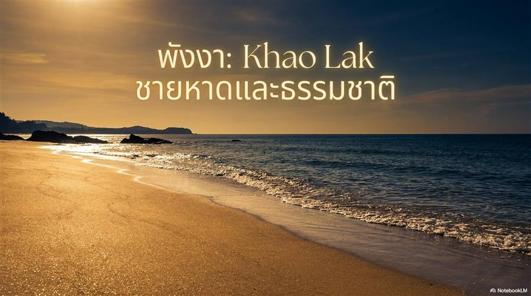
เที่ยวชายหาดหลายโซน เดินเล่นริมหาดและหากิจกรรมทางน้ำแบบชิล ๆ
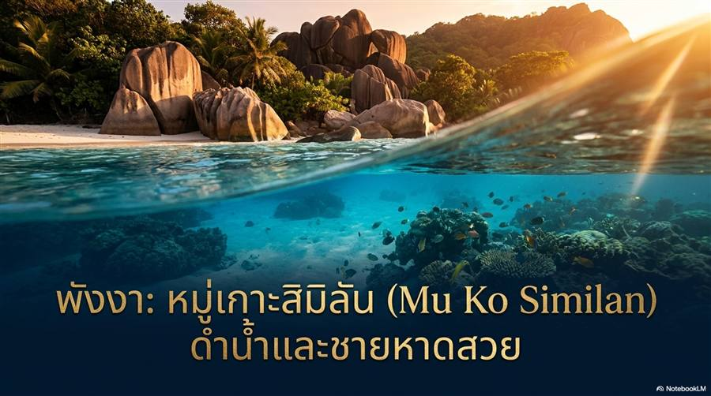
ทริปสายทะเลโดยเฉพาะ ชมบรรยากาศเกาะ และสนุกกับกิจกรรมดำน้ำ/ดูโลกใต้ทะเล
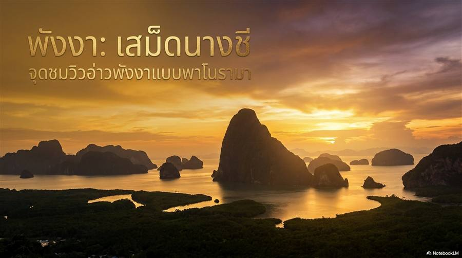
เน้นจุดชมวิวหลักสำหรับสายธรรมชาติ เหมาะกับคนที่อยากเห็นภูเขาหินปูนกลางอ่าวแบบกว้างเต็มตา
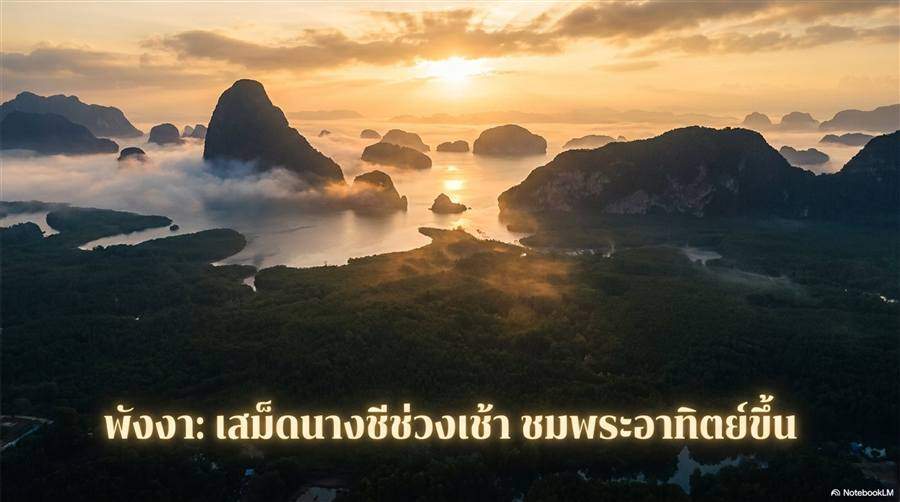
แนะนำเวลาขึ้นจุดชมวิวตอนเช้ามืด จัดคิวเดินทางให้ทันแสงแรกและไม่เร่งจนเกินไป

รวมแนวคิดเลือกมุมภาพและช่วงเวลาที่แสงสวย เพื่อเก็บภาพวิวได้ทั้งแบบธรรมชาติและไลฟ์สไตล์
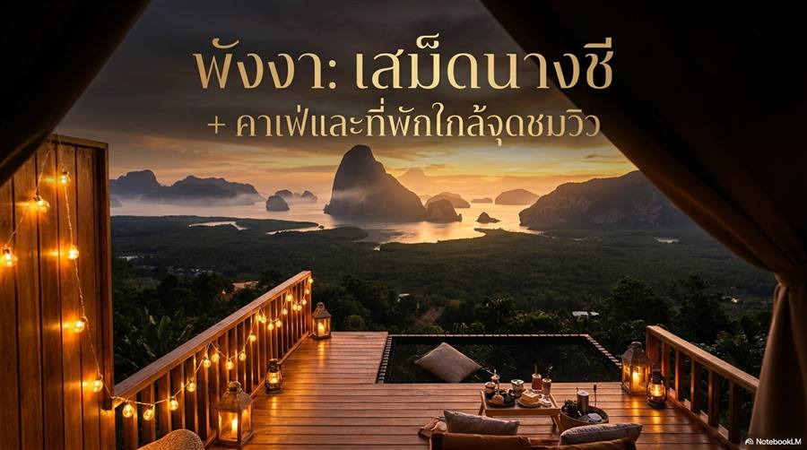
แนวทางวางทริปครึ่งวันถึงหนึ่งวัน พร้อมลำดับแวะคาเฟ่และที่พักให้เดินทางสะดวก
สรุปการวางแผนวันฝนตก การเลือกเวลา และการเตรียมตัวเพื่อให้ทริปกรีนซีซันยังเที่ยวได้สนุก
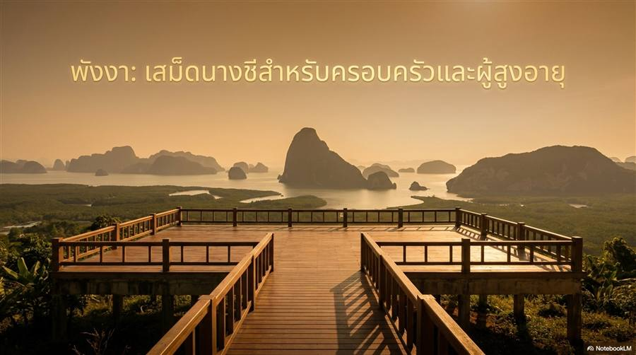
แนะนำเส้นทางและจังหวะเวลาแบบเดินสบาย เหมาะกับทริปที่ต้องการความปลอดภัยและไม่เร่งรีบ
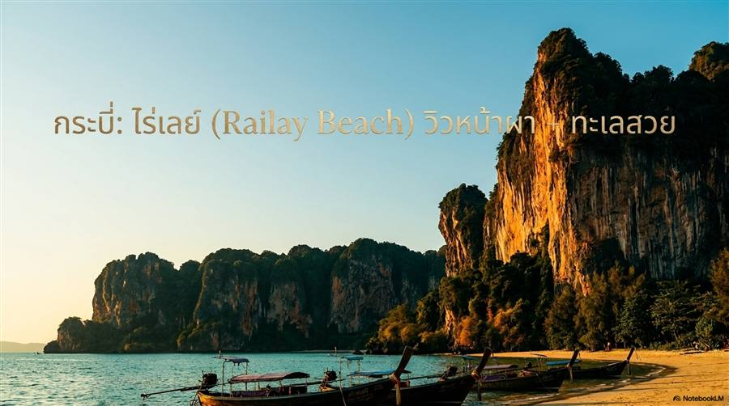
จุดเด่นหน้าผาหินปูนและหาดสวย เหมาะทั้งพักผ่อน ถ่ายรูป และทำกิจกรรมทางน้ำ
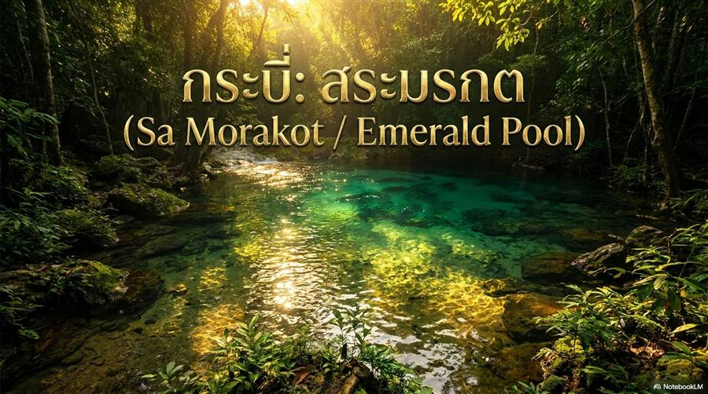
สระสีเขียวเข้มมองแล้วสดชื่น เดินชมจุดน้ำและค่อยวางแผนต่อโซนท่องเที่ยวใกล้เคียง

เดินขึ้นบันไดไปชมมุมมองกว้างและบรรยากาศธรรมชาติของพื้นที่หุบเขา
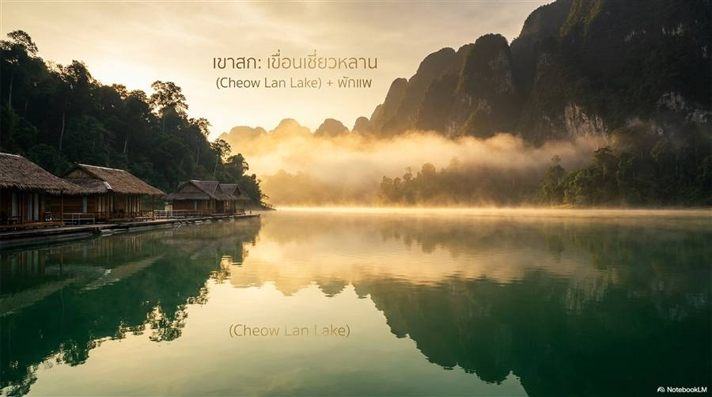
เที่ยวธรรมชาติแบบพักใจ จุดเด่นคือวิวเขื่อนล้อมเขาหินปูนและกิจกรรมล่องเรือในน้ำ
ช่วงที่ดอกบานเป็นไฮไลต์ของเขาสก พร้อมประสบการณ์เดินป่าในป่าฝนที่สมบูรณ์
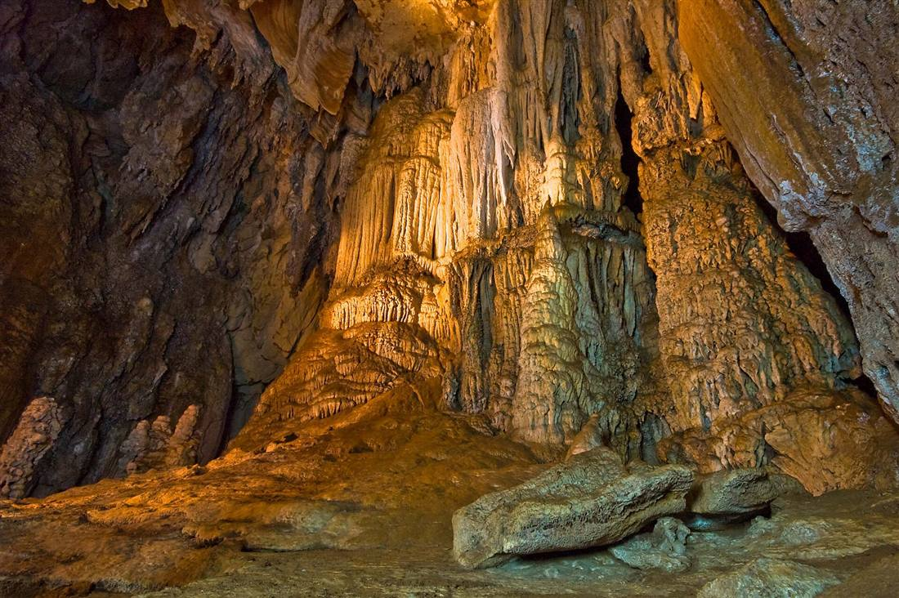
ชวนเที่ยวถ้ำในเขตธรรมชาติของเขาสก พร้อมวางทริปให้ปลอดภัยและพอดีกับฤดูกาล